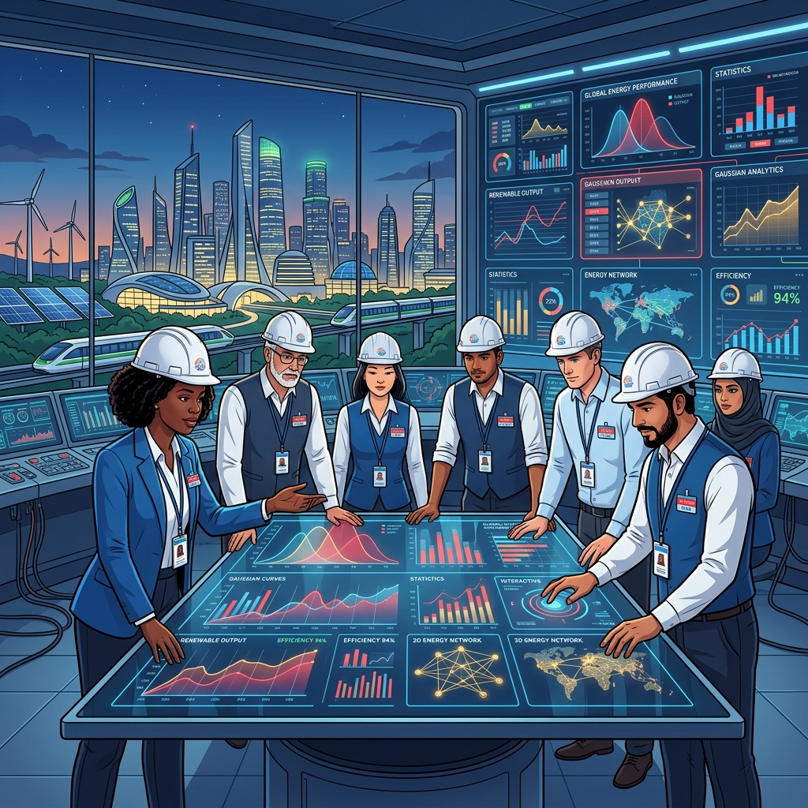

Metode Statistika Data Analisis UTM
Pusat kajian analisis data statistik terpadu yang menyajikan visualisasi kurva distribusi Gaussian, pemodelan regresi linear, dan simulasi pengambilan sampel acak (*random sampling*) secara dinamis dan real-time.

Metodologi & Alur Kerja
Siklus pengolahan data mentah dari backend Python ke visualisasi web
Python Processing
Pembersihan dataset dasar, kalkulasi nilai parameter agregat statistik utama ($Mean$, $Standard\ Deviation$, $Z\text{-}Score$), serta pembentukan estimasi titik kurva teoritis presisi tinggi.
REST API Serving
Konversi data internal ke struktur format JSON terstandar untuk dikirim dari FastAPI backend ke frontend klien secara cepat dengan latensi jaringan minimal.
Interaktivitas Klien
Merender visualisasi dengan Chart.js, menyediakan sistem paginasi tabel data asli yang responsif, serta mensimulasikan parameter distribusi secara dinamis.
Ringkasan Eksekutif Metrik Kunci
Parameter utama hasil sampling populasi terhitung
1.000
100% Terklasterisasi
50.12
Target Ideal: 50.00
10.05
Rentang Variansi Normal
0.30%
Sangat Rendah (Aman)
Narasi Kesimpulan Eksperimen
Berdasarkan pemrosesan data menggunakan metode statistik dalam Python, dataset sampel ini menunjukkan kecenderungan terdistribusi secara normal. Nilai rata-rata dari seluruh data berada pada angka 50.12, yang mendekati parameter ideal rancangan eksperimen kita yaitu 50.
Dengan simpangan baku sebesar 10.05, sebaran data mematuhi kaidah empiris (68-95-99.7). Anomali (outliers) di luar rentang $3\sigma$ sangat minim, yaitu hanya di kisaran 0.30% saja, yang mengonfirmasi kestabilan proses penarikan sampel.
Ingin Memeriksa Integritas Data Secara Langsung?
Anda dapat menguji hasil estimasi ini, menyortir tabel data asli secara dinamis, mengonfigurasi ulang kurva distribusi, atau memeriksa log keluaran respons API di dalam konsol pengolahan data.
Mohamad Ghifari
Data Analyst & Quantitative Researcher
Spesialis dalam analisis data kuantitatif, pemodelan statistik, dan simulasi penarikan sampel menggunakan ekosistem Python (Pandas, NumPy, Matplotlib, Seaborn). Berfokus pada perancangan metodologi data empiris untuk menghasilkan wawasan bisnis yang presisi, representatif, dan bebas bias.
Hubungi Saya (Contact Us)
Mari berdiskusi tentang analisis data dan riset statistik Anda.